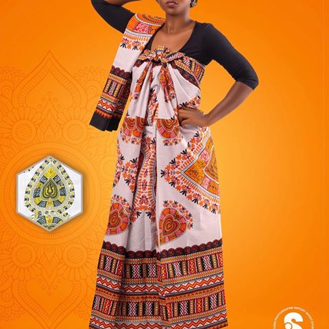
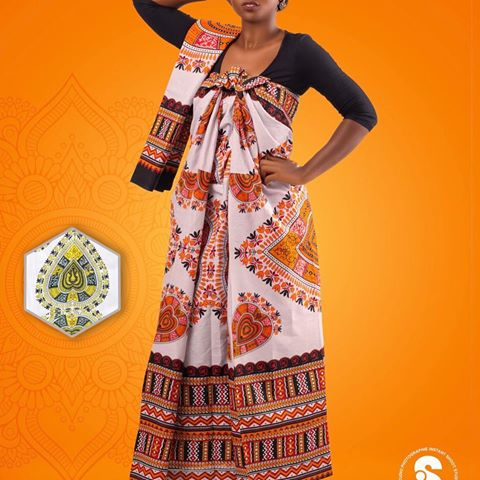

Mayotte
Située dans l'hémisphère Sud, entre l'équateur et le tropique du capricorne, à l'entrée du canal du Mozambique, entre Madagascare et l'afrique, Mayotte est un petit archipel volcanique de 374 Km2. Il forme la partie orientale de l'archipel des comores. Elle comprend deux îles principales (Grand-Terre et Petit-Terre) est une trentaine d'îlots dispersé dans la lagon étendue sur plus de 1500 Km2.L'île principale Grand-Terre, est Formée de 6 Massifs dont le point le plus haut est le Mont Bénara(660M).
Aux origines du peuplement de Mayotte, plusieurs civilisation sont à l'origine du peuplement de Mayotte.- Premier peuplement d'origine bantoue au Vème et le VIIIème siècle.
- Madagascar et L'Afrique au XIIIème siècle et les Arabes apportent la culture Swahilie et la religion Musulmane.
- Les Premier Europeéns, Portugais et Français débarque à Mayotte vers le XVème sicle et utilisent l'archipel comme point de ravitaillement sur la route des Indes.
- À la fin du XVIIIème siècle jusquau début du XIXème siècle, Mayotte est le théatre de troubles violents(Razzias d'esclaves par les Malgaches, pillages, guerres de succession...). La population est Réduite à 270 372 habitant en 2019


Nos Langues
En plus du Français, deux langues sont parleés à mayotte:
- Le Shimaoré
- Le Kibushi
Le Shimaoré,d'origine Swahilie, est parleé par la majorité de la population. Le Kibushi est quand à lui d'origine malgache, nitamment du nord-ouest de Madagascar.

 
